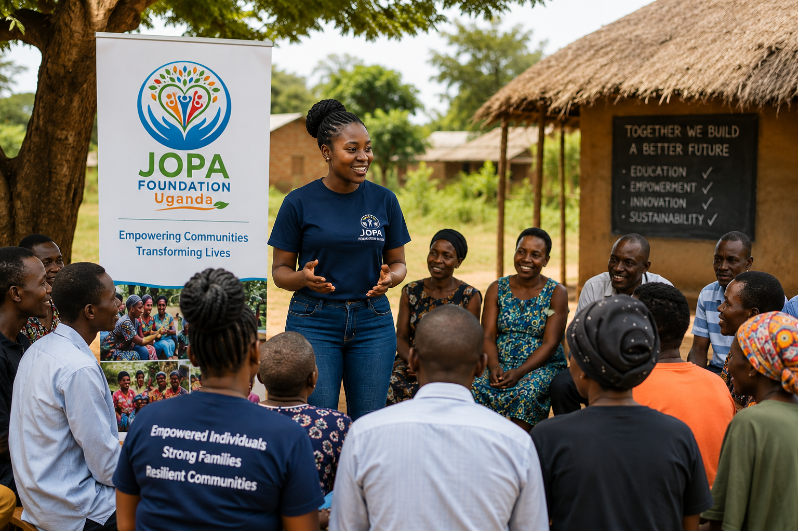

Creating sustainable, community-led change across Uganda.
JOPA Foundation Uganda is a community-driven, non-profit organization committed to creating opportunities, strengthening partnerships, and promoting innovation that transforms lives.
We work alongside communities, government institutions, development partners, and the private sector to improve education, empower youth and women, strengthen livelihoods, promote entrepreneurship, and harness science and technology for sustainable development across Uganda.
Our journey is rooted in the belief that empowered communities are the foundation of sustainable national development.
JOPA Foundation Uganda was established with a vision of creating lasting change by empowering individuals, families, and communities to realize their full potential. What began as a grassroots initiative has evolved into a growing organization committed to addressing social and economic challenges through innovative, community-led solutions.
We believe sustainable development happens when people are equipped with knowledge, skills, and opportunities. Our role is to facilitate partnerships, strengthen local capacity, and support communities in designing solutions that respond to their own priorities.
Today, JOPA Foundation Uganda works across education, youth and women empowerment, entrepreneurship, environmental sustainability, science, technology, innovation, and community development to build resilient communities and create opportunities for future generations.

Everything we do is guided by a shared purpose, a clear vision, and values that shape our work with communities and partners.
To empower communities through joint opportunities, strategic partnerships, education, science, technology, and innovation for sustainable socio-economic transformation.
To build empowered, innovative, and sustainable communities where every individual has access to opportunities that improve quality of life and contribute to national development.
We work closely with communities, understanding their context, challenges, and aspirations before designing interventions.
Our programs are informed by research and data to ensure effectiveness and maximum impact on target populations.
We invest in building local capacity to ensure sustainability and local ownership of development initiatives.
We collaborate with government, private sector, and other stakeholders to amplify our impact and reach.
We track our progress rigorously to ensure accountability and continuous improvement of our programs.
We use evidence from our work to advocate for supportive policies that enable sustainable development.
District of Operation
Active Projects
Direct Beneficiaries
Team Members
Discover the programs we run and the projects we're implementing across Uganda.